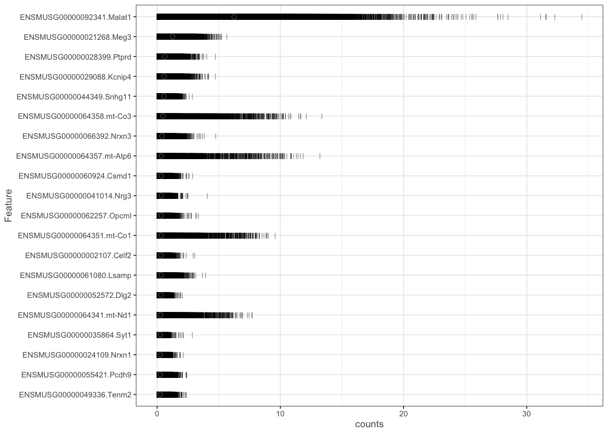
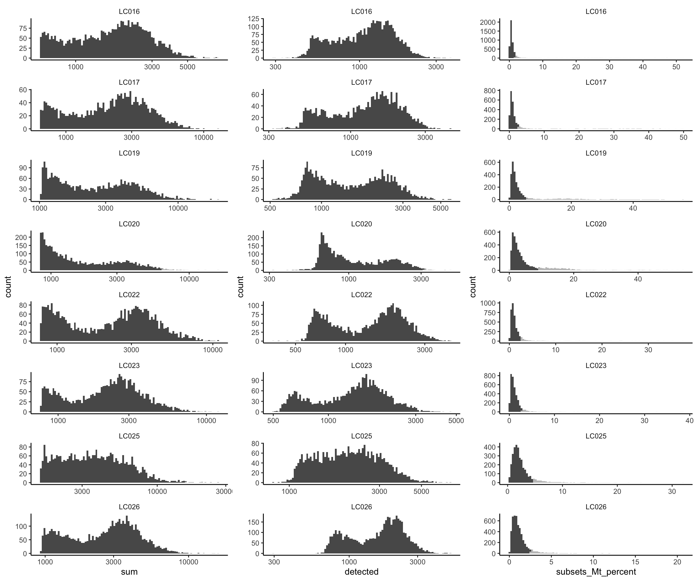
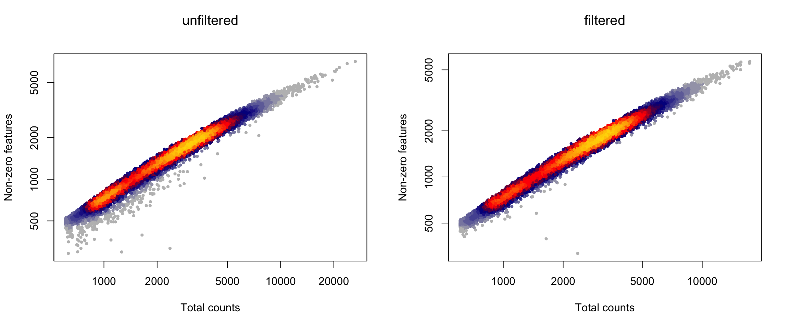

Last updated: 2020-03-31
Checks: 5 2
Knit directory: LPS/
This reproducible R Markdown analysis was created with workflowr (version 1.6.1). The Checks tab describes the reproducibility checks that were applied when the results were created. The Past versions tab lists the development history.
The R Markdown file has unstaged changes. To know which version of the R Markdown file created these results, you’ll want to first commit it to the Git repo. If you’re still working on the analysis, you can ignore this warning. When you’re finished, you can run wflow_publish to commit the R Markdown file and build the HTML.
Great job! The global environment was empty. Objects defined in the global environment can affect the analysis in your R Markdown file in unknown ways. For reproduciblity it’s best to always run the code in an empty environment.
The command set.seed(20190311) was run prior to running the code in the R Markdown file. Setting a seed ensures that any results that rely on randomness, e.g. subsampling or permutations, are reproducible.
Great job! Recording the operating system, R version, and package versions is critical for reproducibility.
To ensure reproducibility of the results, delete the cache directory 0-preprocessing_cache and re-run the analysis. To have workflowr automatically delete the cache directory prior to building the file, set delete_cache = TRUE when running wflow_build() or wflow_publish().
Great job! Using relative paths to the files within your workflowr project makes it easier to run your code on other machines.
Great! You are using Git for version control. Tracking code development and connecting the code version to the results is critical for reproducibility.
The results in this page were generated with repository version bebad71. See the Past versions tab to see a history of the changes made to the R Markdown and HTML files.
Note that you need to be careful to ensure that all relevant files for the analysis have been committed to Git prior to generating the results (you can use wflow_publish or wflow_git_commit). workflowr only checks the R Markdown file, but you know if there are other scripts or data files that it depends on. Below is the status of the Git repository when the results were generated:
Ignored files:
Ignored: .DS_Store
Ignored: .snakemake/
Ignored: LPS/.DS_Store
Ignored: LPS/analysis/.DS_Store
Ignored: LPS/analysis/0-preprocessing_cache/
Ignored: LPS/analysis/1-clustering_cache/
Ignored: LPS/analysis/2-annotation_cache/
Ignored: LPS/analysis/3-differential_cache/
Ignored: LPS/analysis/4-visualization_cache/
Ignored: LPS/analysis/5-geneset_cache/
Ignored: LPS/code/.DS_Store
Ignored: LPS/data/
Ignored: LPS/figures/
Ignored: LPS/output/.DS_Store
Ignored: LPS/output/DS_results_AD-gid.logcounts.rds
Ignored: LPS/output/DS_results_AD-gid.vstresiduals.rds
Ignored: LPS/output/DS_results_AD-sid.logcounts.rds
Ignored: LPS/output/DS_results_AD-sid.vstresiduals.rds
Ignored: LPS/output/DS_results_MAST.logcounts.rds
Ignored: LPS/output/DS_results_MM-dream.rds
Ignored: LPS/output/DS_results_MM-dream2.rds
Ignored: LPS/output/DS_results_MM-nbinom.rds
Ignored: LPS/output/DS_results_MM-vst.rds
Ignored: LPS/output/DS_results_edgeR.sum.counts.rds
Ignored: LPS/output/DS_results_edgeR.sum.scalecpm.rds
Ignored: LPS/output/DS_results_limma-trend.mean.logcounts.rds
Ignored: LPS/output/DS_results_limma-trend.mean.vstresiduals.rds
Ignored: LPS/output/DS_results_limma-voom.sum.counts.rds
Ignored: LPS/output/DS_results_pb.csv
Ignored: LPS/output/DS_results_scDD.logcounts.rds
Ignored: LPS/output/DS_results_scDD.vstresiduals.rds
Ignored: LPS/output/GSEA_data.rds
Ignored: LPS/output/GSEA_df.rds
Ignored: LPS/output/GSEA_results.csv
Ignored: LPS/output/SCE_annotation.rds
Ignored: LPS/output/SCE_preprocessing.rds
Ignored: LPS/output/SO_clustering.rds
Ignored: LPS/output/logFCs_by_cluster-sample.rds
Ignored: LPS/output/topGO_ccid3.csv
Ignored: data/
Ignored: figures/.DS_Store
Ignored: figures/kang-perf_by_cat.pdf
Ignored: figures/kang-perf_combined.pdf
Ignored: figures/magl-perf_by_cat.pdf
Ignored: figures/null.pdf
Ignored: figures/pb_mean_disp.pdf
Ignored: figures/perf_by_es.pdf
Ignored: figures/perf_by_gs.pdf
Ignored: figures/perf_by_ss.pdf
Ignored: figures/sim_pars.pdf
Ignored: figures/sim_vs_est_lfc.pdf
Ignored: figures/summary_heatmap.pdf
Ignored: meta/
Ignored: plots/
Ignored: results/
Ignored: scripts/.DS_Store
Ignored: scripts/.drake/config/
Ignored: scripts/.drake/data/
Ignored: scripts/.drake/drake/
Ignored: scripts/.drake/keys/
Ignored: scripts/.drake/scratch/
Untracked files:
Untracked: LPS/workflowr.Rproj
Untracked: README.html
Untracked: figures/figures/
Untracked: logs/
Untracked: session_info.txt
Untracked: setup.Rout
Unstaged changes:
Modified: .Renviron
Modified: LPS/.gitignore
Modified: LPS/analysis/0-preprocessing.Rmd
Modified: LPS/analysis/1-clustering.Rmd
Modified: LPS/analysis/2-annotation.Rmd
Modified: LPS/analysis/3-differential.Rmd
Modified: LPS/analysis/4-visualization.Rmd
Modified: LPS/analysis/5-geneset.Rmd
Deleted: LPS/analysis/6-more.Rmd
Modified: LPS/analysis/_site.yml
Modified: LPS/analysis/index.Rmd
Modified: LPS/code/utils.R
Modified: README.md
Modified: Snakefile
Modified: figures/fig_sim_pars.R
Modified: figures/fig_summary.R
Note that any generated files, e.g. HTML, png, CSS, etc., are not included in this status report because it is ok for generated content to have uncommitted changes.
These are the previous versions of the repository in which changes were made to the R Markdown (LPS/analysis/0-preprocessing.Rmd) and HTML (LPS/docs/0-preprocessing.html) files. If you’ve configured a remote Git repository (see ?wflow_git_remote), click on the hyperlinks in the table below to view the files as they were in that past version.
| File | Version | Author | Date | Message |
|---|---|---|---|---|
| Rmd | a38f6f0 | HelenaLC | 2019-08-13 | bioc3.10 rerun |
| html | a38f6f0 | HelenaLC | 2019-08-13 | bioc3.10 rerun |
| Rmd | 7189a88 | HelenaLC | 2019-08-13 | bioc3.10 rerun |
| html | 7189a88 | HelenaLC | 2019-08-13 | bioc3.10 rerun |
library(cowplot)
library(DropletUtils)
library(ggplot2)
library(LSD)
library(Matrix)
library(readxl)
library(scater)
library(scds)
library(SingleCellExperiment)# load raw counts
fastq_dirs <- list.dirs("data", recursive = FALSE, full.names = TRUE)
names(fastq_dirs) <- basename(fastq_dirs)
sce <- read10xCounts(fastq_dirs)
# rename row/colData colnames & SCE dimnames
names(rowData(sce)) <- c("ENSEMBL", "SYMBOL")
names(colData(sce)) <- c("sample_id", "barcode")
sce$sample_id <- factor(basename(sce$sample_id))
dimnames(sce) <- list(
with(rowData(sce), paste(ENSEMBL, SYMBOL, sep = ".")),
with(colData(sce), paste(barcode, sample_id, sep = ".")))
# load metadata
md_dir <- file.path("data", "metadata.xlsx")
md <- read_excel(md_dir)
m <- match(sce$sample_id, md$`Sample ID`)
sce$group_id <- md$Characteristics[m]
# remove undetected genes
sce <- sce[rowSums(counts(sce) > 0) > 0, ]
dim(sce)[1] 22963 30185# split SCE by sample
cs_by_s <- split(colnames(sce), sce$sample_id)
sce_by_s <- lapply(cs_by_s, function(cs) sce[, cs])
# run 'scds'
sce_by_s <- lapply(sce_by_s, function(u)
cxds_bcds_hybrid(bcds(cxds(u))))
# remove doublets
sce_by_s <- lapply(sce_by_s, function(u) {
# compute expected nb. of doublets (10x)
n_dbl <- ceiling(0.01 * ncol(u)^2 / 1e3)
# remove 'n_dbl' cells w/ highest doublet score
o <- order(u$hybrid_score, decreasing = TRUE)
u[, -o[seq_len(n_dbl)]]
})
# merge back into single SCE
sce <- do.call("cbind", sce_by_s)(mito <- grep("mt-", rownames(sce), value = TRUE)) [1] "ENSMUSG00000064341.mt-Nd1" "ENSMUSG00000064345.mt-Nd2"
[3] "ENSMUSG00000064351.mt-Co1" "ENSMUSG00000064354.mt-Co2"
[5] "ENSMUSG00000064356.mt-Atp8" "ENSMUSG00000064357.mt-Atp6"
[7] "ENSMUSG00000064358.mt-Co3" "ENSMUSG00000064360.mt-Nd3"
[9] "ENSMUSG00000065947.mt-Nd4l" "ENSMUSG00000064363.mt-Nd4"
[11] "ENSMUSG00000064367.mt-Nd5" "ENSMUSG00000064368.mt-Nd6"
[13] "ENSMUSG00000064370.mt-Cytb"sce <- addPerCellQC(sce, subsets = list(Mt = mito))
plotHighestExprs(sce, n = 20)
# get sample-specific outliers
cols <- c("sum", "detected", "subsets_Mt_percent")
log <- c(TRUE, TRUE, FALSE)
type <- c("both", "both", "higher")
drop_cols <- paste0(cols, "_drop")
for (i in seq_along(cols))
colData(sce)[[drop_cols[i]]] <- isOutlier(sce[[cols[i]]],
nmads = 2.5, type = type[i], log = log[i], batch = sce$sample_id)
sapply(drop_cols, function(i)
sapply(drop_cols, function(j)
sum(sce[[i]] & sce[[j]]))) sum_drop detected_drop subsets_Mt_percent_drop
sum_drop 96 44 16
detected_drop 44 62 20
subsets_Mt_percent_drop 16 20 3329cd <- data.frame(colData(sce))
ps <- lapply(seq_along(cols), function (i) {
p <- ggplot(cd, aes_string(x = cols[i], alpha = drop_cols[i])) +
geom_histogram(bins = 100, show.legend = FALSE) +
scale_alpha_manual(values = c("FALSE" = 1, "TRUE" = 0.4)) +
facet_wrap(~sample_id, ncol = 1, scales = "free") +
theme_classic() + theme(strip.background = element_blank())
if (log[i])
p <- p + scale_x_log10()
return(p)
})
plot_grid(plotlist = ps, ncol = 3)
layout(matrix(1:2, nrow = 1))
ol <- rowSums(as.matrix(colData(sce)[drop_cols])) != 0
x <- sce$sum
y <- sce$detected
heatscatter(x, y, log="xy", main = "unfiltered",
xlab = "Total counts", ylab = "Non-zero features")
heatscatter(x[!ol], y[!ol], log="xy", main = "filtered",
xlab = "Total counts", ylab = "Non-zero features")
# summary of cells kept
ns <- table(sce$sample_id)
ns_fil <- table(sce$sample_id[!ol])
print(rbind(
unfiltered = ns, filtered = ns_fil,
"%" = ns_fil / ns * 100), digits = 0) LC016 LC017 LC019 LC020 LC022 LC023 LC025 LC026
unfiltered 4345 2361 2860 4233 3639 3404 3234 4908
filtered 3904 2074 2343 3378 3274 3158 2927 4512
% 90 88 82 80 90 93 91 92# drop outlier cells
sce <- sce[, !ol]
dim(sce)[1] 22963 25570# require count > 1 in at least 20 cells
sce <- sce[rowSums(counts(sce) > 1) >= 20, ]
dim(sce)[1] 11076 25570saveRDS(sce, file.path("output", "SCE_preprocessing.rds"))
sessionInfo()R version 3.6.2 (2019-12-12)
Platform: x86_64-apple-darwin15.6.0 (64-bit)
Running under: macOS Catalina 10.15.2
Matrix products: default
BLAS: /Library/Frameworks/R.framework/Versions/3.6/Resources/lib/libRblas.0.dylib
LAPACK: /Library/Frameworks/R.framework/Versions/3.6/Resources/lib/libRlapack.dylib
locale:
[1] en_US.UTF-8/en_US.UTF-8/en_US.UTF-8/C/en_US.UTF-8/en_US.UTF-8
attached base packages:
[1] stats4 parallel stats graphics grDevices utils datasets
[8] methods base
other attached packages:
[1] scds_1.2.0 scater_1.14.6
[3] readxl_1.3.1 Matrix_1.2-18
[5] LSD_4.0-0 ggplot2_3.2.1
[7] DropletUtils_1.6.1 SingleCellExperiment_1.8.0
[9] SummarizedExperiment_1.16.1 DelayedArray_0.12.2
[11] BiocParallel_1.20.1 matrixStats_0.55.0
[13] Biobase_2.46.0 GenomicRanges_1.38.0
[15] GenomeInfoDb_1.22.0 IRanges_2.20.2
[17] S4Vectors_0.24.3 BiocGenerics_0.32.0
[19] cowplot_1.0.0 workflowr_1.6.0
loaded via a namespace (and not attached):
[1] viridis_0.5.1 edgeR_3.28.0 BiocSingular_1.2.1
[4] viridisLite_0.3.0 jsonlite_1.6.1 DelayedMatrixStats_1.8.0
[7] R.utils_2.9.2 assertthat_0.2.1 dqrng_0.2.1
[10] vipor_0.4.5 GenomeInfoDbData_1.2.2 cellranger_1.1.0
[13] yaml_2.2.1 pillar_1.4.3 backports_1.1.5
[16] lattice_0.20-38 glue_1.3.1 limma_3.42.2
[19] reticulate_1.14 pROC_1.16.1 digest_0.6.23
[22] promises_1.1.0 XVector_0.26.0 colorspace_1.4-1
[25] plyr_1.8.5 htmltools_0.4.0 httpuv_1.5.2
[28] R.oo_1.23.0 pkgconfig_2.0.3 zlibbioc_1.32.0
[31] purrr_0.3.3 scales_1.1.0 HDF5Array_1.14.2
[34] whisker_0.4 later_1.0.0 git2r_0.26.1
[37] tibble_2.1.3 farver_2.0.3 xgboost_0.90.0.2
[40] withr_2.1.2 lazyeval_0.2.2 magrittr_1.5
[43] crayon_1.3.4 evaluate_0.14 R.methodsS3_1.7.1
[46] fs_1.3.1 beeswarm_0.2.3 data.table_1.12.8
[49] tools_3.6.2 lifecycle_0.1.0 stringr_1.4.0
[52] Rhdf5lib_1.8.0 munsell_0.5.0 locfit_1.5-9.1
[55] irlba_2.3.3 compiler_3.6.2 rsvd_1.0.2
[58] rlang_0.4.4 rhdf5_2.30.1 grid_3.6.2
[61] RCurl_1.98-1.1 BiocNeighbors_1.4.1 rstudioapi_0.11
[64] labeling_0.3 bitops_1.0-6 rmarkdown_2.1
[67] codetools_0.2-16 gtable_0.3.0 R6_2.4.1
[70] gridExtra_2.3 knitr_1.28 dplyr_0.8.4
[73] rprojroot_1.3-2 ggbeeswarm_0.6.0 stringi_1.4.5
[76] Rcpp_1.0.3 tidyselect_1.0.0 xfun_0.12